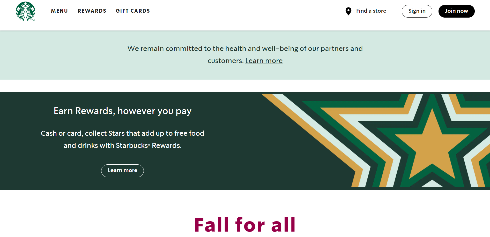

This website is simple, intuitive, has good form and color agreement, and has a replicable method. I do not think it has beauty underneath or that it has approachable innovation, nor do I think that is what the creators of the website were striving for. The navigation of the website is easy to use and to learn, it is visually clear and simple, it is relevant, and its accessibility is very good. The branding and content are both clear. As far as accuracy of their code goes, I found a rogue bracket/brace on one of the pages.

This website is very well organized. It is clear, simple, and effective. The main menu page has all the main food and drink options. It also has a featured (seasonal food and drink) page, keeping the site very relevant. There is immediate intuition when using this site except for one thing, when on the featured drinks page the site no longer shows the other menu options which may confuse people. Other than that it is very accurate and accessible. The layout of the pages could be replicated but the images would take more time, some have graphic design elements integrated into the images. I think the creators of the site used a simple 12 grid system.
This website is organized but not as simple as the two above. This site has lots of colors and colorful images. The navigation for the site is interesting because it is a static structure on the left side of the site, this may not be innovative but I think it is a really good idea and makes everything very accessible. The branding for this site was good and on every page. The layout and colors for this site could be replicable. The layout is an interesting use of grid units.
This is a simple and intuitive website. The layout makes good use of space on the pages. The navigation is static making it easily accessible and most likely easy to learn. Some of the navigation includes a drop-down menu so you don’t have to leave the page you’re on to view new items. Their branding is mainly done through use of their signature colors, making it recognizable. The website seems simple enough it could be replicated. Content is clear and concise.
This site is similar to the Dunkin’ site due to its simple and good use of space. The navigation is static but some options take you to another website. The content is clear and covers the page nicely. The site includes a “enable/disable” button above the navigation bar for people to easily access. The menu is easy to maneuver. Visually I think it was the best site out of the five, it wasn’t overly organized, including items and typography were placed clearly on the page.